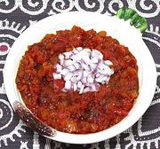

|
Ata DinDin Chili Sauce #1Nigeria - Ata DinDin | ||||
| Makes: Effort: Sched: DoAhead: |
1 cup ** 25 min Yes |
Ata DinDin is Yoruba, meaning "Fried Pepper". Recipes vary in the extreme (see Note-5). My formula is easily adjusted for heat (see Note-1). For a very different version see our recipe Ata DinDin Chili Sauce #2. | |||
|
1 6 8 5 2 2 1/2 |
# oz T t t |
Tomatoes Habaneros (1) Onion Red Palm Oil (2) Crayfish, ground (3) Maggi Cube (4) Salt |
Prep - (20 min)
|